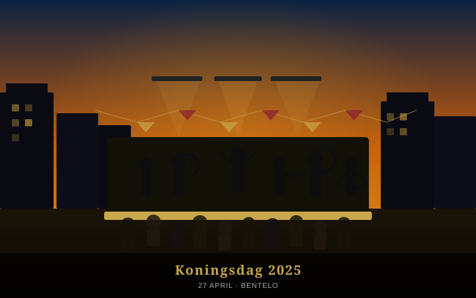
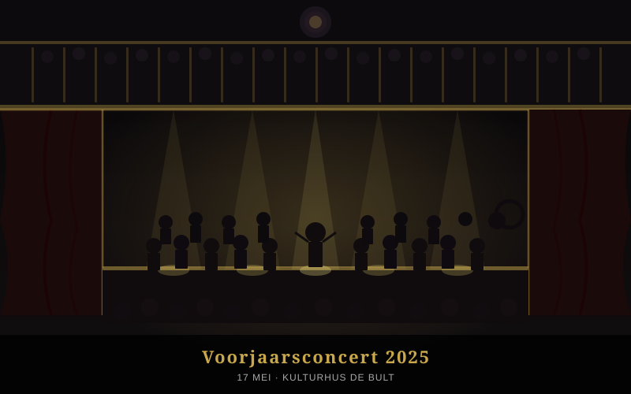
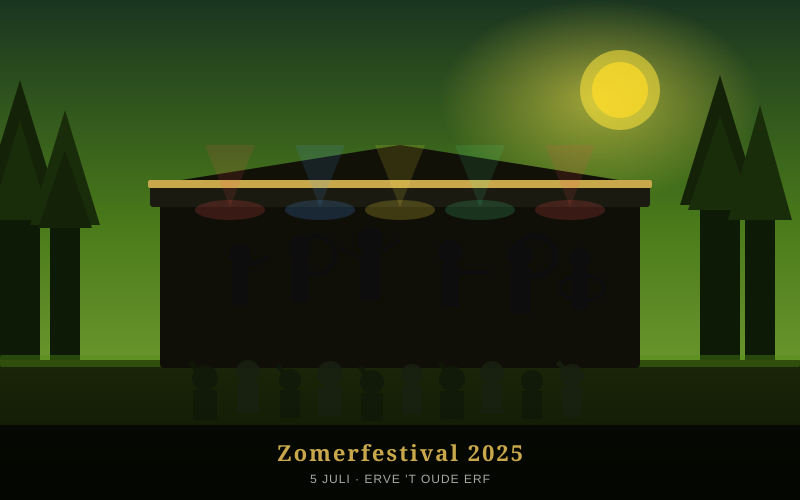
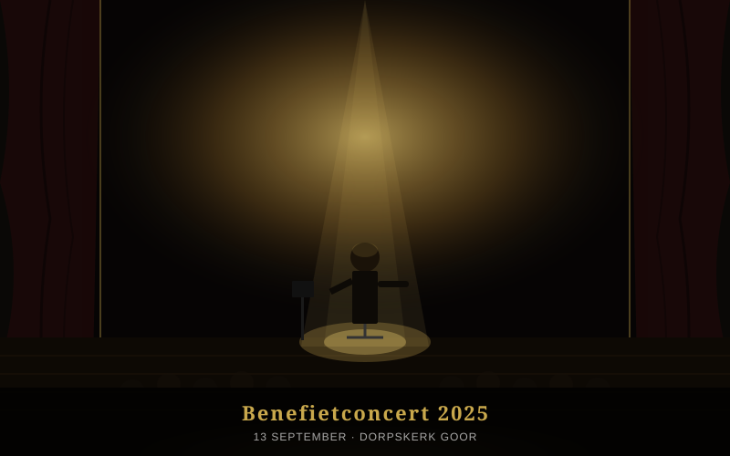
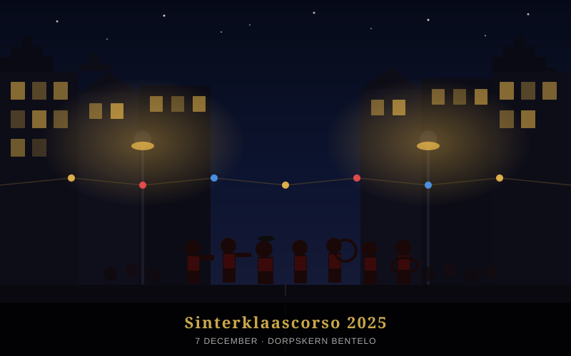
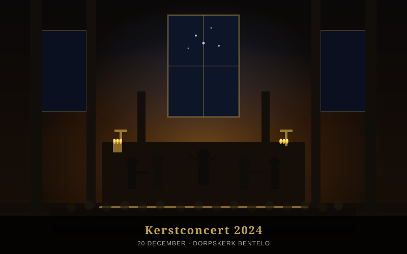

Fanfare · Bentelo · Est. 1952
Muziek die je raakt. Klinkers die je meesleuren.
Wij spelen voor iedereen — van kroegavond tot koningsdag.
Beentels Kabaal is opgericht in 1952 door een stel eigenwijze muzikanten die vonden dat Bentelo wel wat meer lawaai kon gebruiken. Zeven decennia later spelen we nog steeds — met net zoveel plezier, maar iets betere instrumenten.
Van bruiloften en jubilea tot straatparades en grootse concertzalen: wij passen ons repertoire aan, maar nooit onze energie. Zwart en goud is ons uniform, muziek is onze taal.
Fanfare in actie
Winnaars 2024
Wees erbij. Het is de moeite waard.
Gratis openluchtconcert op het marktplein van Bentelo. Meezingen toegestaan — en zelfs aangemoedigd.
🕑 13:00 – 17:00 uurOns grote voorjaarsconcert met premières uit ons nieuwe repertoire. Kaarten beschikbaar aan de deur.
🕑 20:00 – 22:30 uurTwee dagen muziek, bier en gezelligheid op een prachtige boerenerflocatie in het Twentse landschap.
🕑 Zaterdag 15:00 – 23:00 uurMuziek voor een goed doel. Toegang op donatie — elke euro gaat naar de plaatselijke voedselbank.
🕑 19:30 – 21:30 uurJaarlijkse optocht door het centrum van Bentelo. Warme chocolademelk en speculaas gegarandeerd.
🕑 14:00 – 17:00 uurKlik op een optreden om de foto's te bekijken.

Openluchtconcert op het Marktplein van Bentelo
12 foto's →
Grote zaal van Kulturhus De Bult, Bentelo
10 foto's →
Buitenpodium Erve 't Oude Erf, Twente
14 foto's →
Dorpskerk Goor — voor de Voedselbank
8 foto's →
Jaarlijkse optocht door de dorpskern Bentelo
9 foto's →
Sfeervolle avond in de Dorpskerk van Bentelo
11 foto's →Wil je ons boeken voor een optreden? Of wil je zelf meespelen bij een gezellige Twentse fanfare? Stuur ons een berichtje.